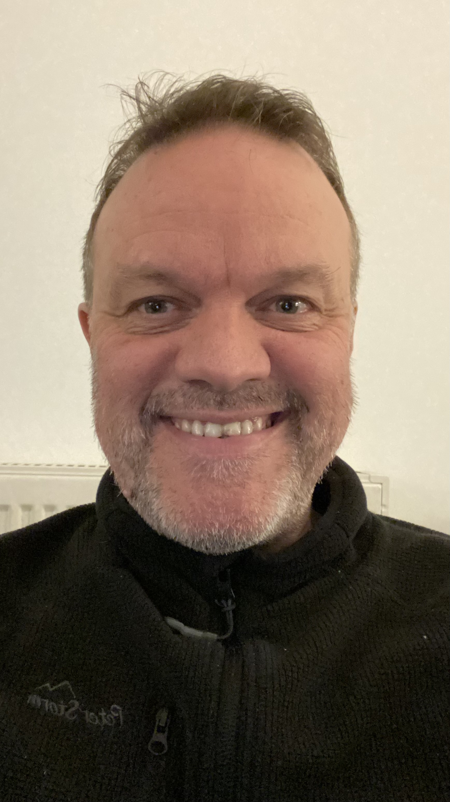

Andrew Oels-Wallis / Graphic & Website Designer

Personal Profile
I have over 35 years experience in design/creative artwork for print whether for design agencies, printers or private companies; specialising in design for print for a wide variety of clients and businesses, large and small.
I am also experienced in photo retouching and editing. I also design and recreate logos. Copywriting and editing are also one of my strengths.
I consider myself to be versatile, dynamic, reliable, enthusiastic, responsible, considerate, unique and friendly. I have strong communication skills and have a keen eye for attention to detail. I am confident and professional in my association with colleagues and clients.
I am very used to responsibility and have years of experience of management and also working on my own using my initiative. I can think on-the-fly and will ensure that all projects and tasks are fulfilled to the best of my ability.
I am also taking a Web Developmemnt course on Udemy.
I own a car, and have a clean driving licence.
Education
September 1985 to June 1987
Croydon College, Surrey
HND in Graphic Design, Typography and Computer Studies
September 1980 to May 1985
Oathall Community College, Haywards Heath
'O' level in English, Maths, Computer Studies, Art, Physics, Geography and CSE Physical Education
Work Experience
September 2018 to date
Graphic Designer/Creative Artworker, Fastprint & Design Ltd, Hastings
- Graphic designer/creative artworker for print
- Specialising in design/artwork and printing
- Business stationery, flyers, adverts, brochures, packaging, menus, booklets,
catalogues, exhibition stands and signage
- Retouching images and creating logos
- Creating editable interactive PDFs
- Experienced using Konica Minolta SRA3 high speed digital printing machines
- Producing colour separated print ready files for platemaking
- Customer liaison
December 2012 to date
Self-employed Graphic Designer/Creative Artworker, Eastbourne
- Graphic designer/creative artworker for print and website design
- Specialising in branding, logo design
- Wordpress, HTML/CSS
- Sourcing new business
- Client account management
- Marketing business
- Quotations
- Invoicing, credit control
- Customer services
- Negotiation
- Sourcing/liaising with suppliers
Projects including:
Sales, Design & Artwork, Eastbourne, East Sussex
- Sales for a Dutch company specialising in promotional printed products
- Online management (CRM)
- Processing customer supplied files for artwork
- Freelance design work at Identity Group, Westham
- Graphic design, artwork and website for Matey Measure®
- Graphic design and artwork for Brighton Vibes Ltd/Vibe Nation
January 2002 to December 2012
Studio Manager/Graphic Designer, Forms House Ltd, Eastbourne, East Sussex
- Managing the studio
- Stock control
- Graphic designer/creative artworker
- Specialising in design/artwork
- Client account management
- Quotations
- Customer services
- Sourcing/liaising with suppliers
- Business forms and continuous stationery
September 2000 to December 2001
Freelance Graphic Designer/Creative Artworker, Miracle Macs
- Graphic design
- Creative artworker
- Working in-house at design agencies within Sussex and Kent
- Worked for Cats Protection, GSBA Associates, and Michael Bell Design Consultants
July 1997 to April 2000
Graphic Designer/Creative Artworker, Mike Bettle Print Ltd, Partridge Green, West Sussex
- Graphic designer/creative artworker for print
- Specialise in branding, logo design
- Business stationery, flyers, adverts, and brochure design
- Preparing press ready artwork using QuarkXpress INposition software
- Use of Agfa Imagesetters
- Customer services
September 1999 to January 2000
Apple iMac Demonstrator (Comet, Dixons & Currys) - Fixed Contract, Brighton to Chichester, Sussex
- Represented Apple Computers
- Promotion of Apple iMac
- Demonstrations
- Customer services
- Sales
September 1987 to July 1997
Graphic Designer/Creative Artworker, Aon Risk Services Ltd, Haywards Heath, Sussex
- Graphic designer/creative artworker for print
- Specialising in branding, logo design
- Business stationery, flyers, adverts and brochure design
- Preparation of press ready artwork for Agfa Imagesetter
- Customer services
- Major clients were Age Concern, P&O, Rover Cars and Motability
September 1985 to September 1987
Trainee Graphic Designer/Artworker, Polar Plus Ltd, Coulsdon, Surrey
- Used traditional typesetting techniques (similar to HTML)
- Learnt graphic design techniques
- Produced press ready artwork
- Agfa Compugraphic 10/100 Imagesetter
Key Skills
- Mac OSX and Windows
- Adobe Creative Suite, including:
- InDesign CC
- Photoshop CC
- Illustrator CC
- Acrobat Pro CC
- After Effects CC
- QuarkXpress (including INposition)
- HTML5/CSS3
- WordPress
- CorelDraw X7
- Konica Minolta digital presses (1060L & 2060L)
- Microsoft Office
Qualifications
- CMA1/MET1 (Gas Safe)
- Electrics (MOCOPA)
Hobbies
Contact